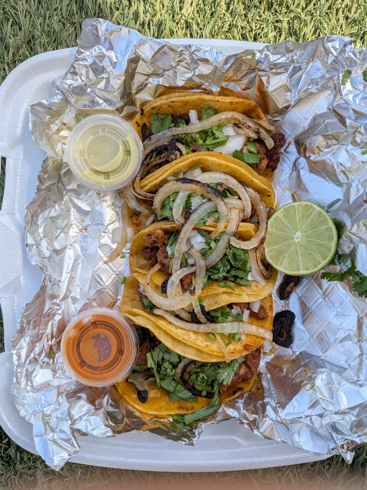
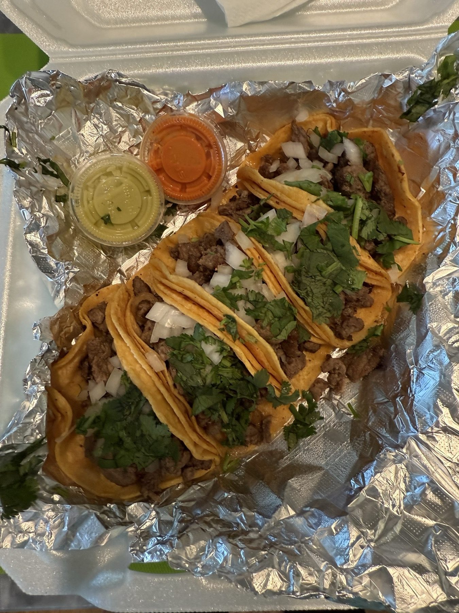
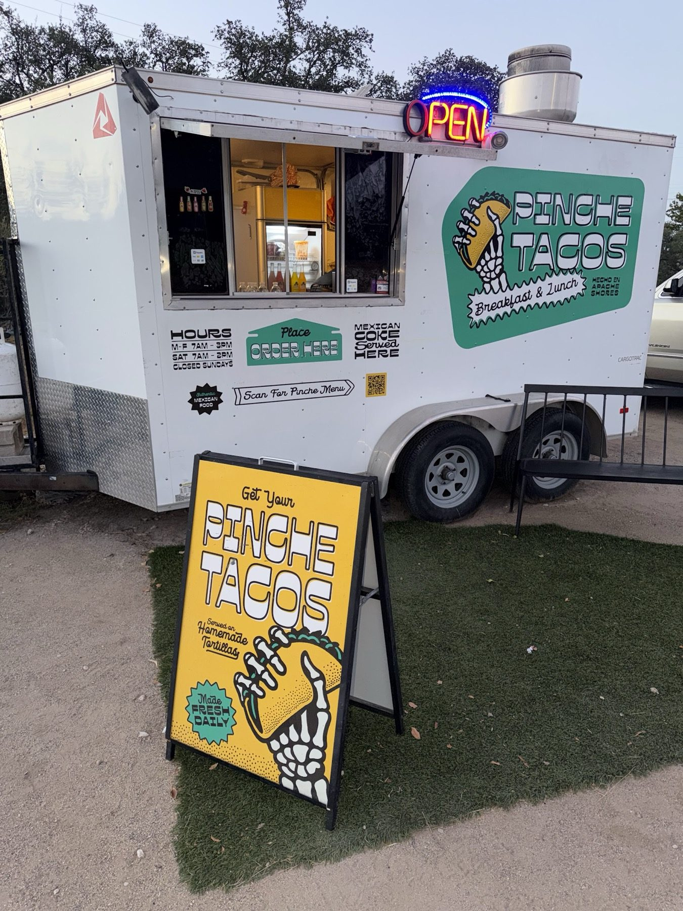
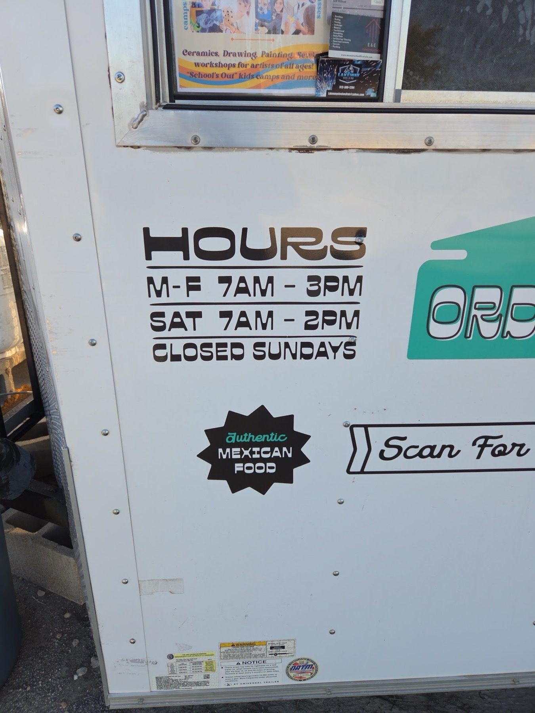
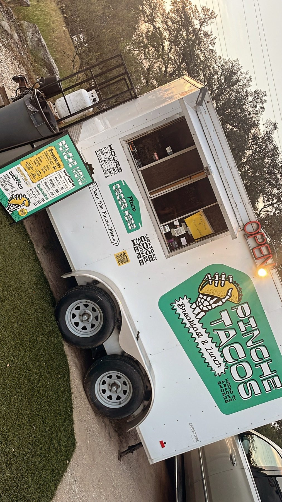
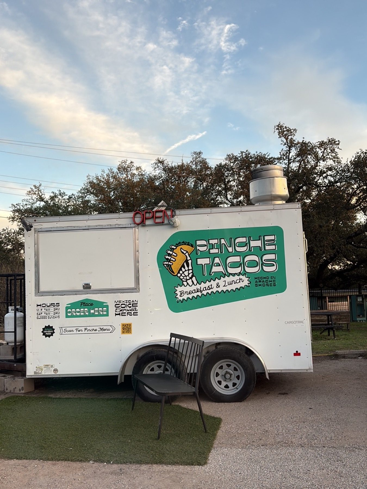

Insert photo herea tray of breakfast tacos
Breakfast tacos
Egg & cheese, bacon, sausage, chorizo and more from 7 AM.
Pastor and steak street tacos on corn tortillas. Breakfast tacos from 7 AM.

Where to find us
14919 General Williamson Dr, Austin, TX 78734
Mon 7 AM–3 PMTue 7 AM–3 PMWed 7 AM–3 PMThu 7 AM–3 PMFri 7 AM–7 PMSat 7 AM–2 PMSun Closed
DirectionsBreakfast tacos from 7 AM
Find the truck
Look for the white trailer, yellow sandwich board and neon sign. Picnic tables out front.
What's cooking
Breakfast tacos, street tacos and a big breakfast burrito.
Egg & cheese, bacon, sausage, chorizo and more from 7 AM.

Pastor and steak tacos on corn tortillas, with limes and salsa on the side.
Don't forget the Pinche Big Breakfast Burrito, the big one on the breakfast menu.



5.0 ★ · 24 Google reviews
Everything about this place is such a gem. Incredible food, wonderful service!, and a little Oasis of picnic tables and yard lights. I had the pastor street tacos and I can't wait to come back for breakfast. 10 out of 10.
Delicious! Best breakfast tacos in the lake Travis area
1st time here. Had steak street tacos. 4 yummy tacos & especially wonderful corn tortillas. Will be back!
Meet the crew
Authentic Mexican food from a white trailer. Out front: picnic tables, yard lights and a yellow sandwich board that says open.
Text an order and we will let you know when it is ready.
